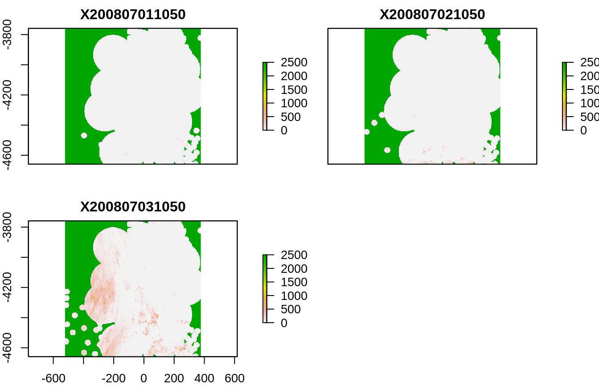
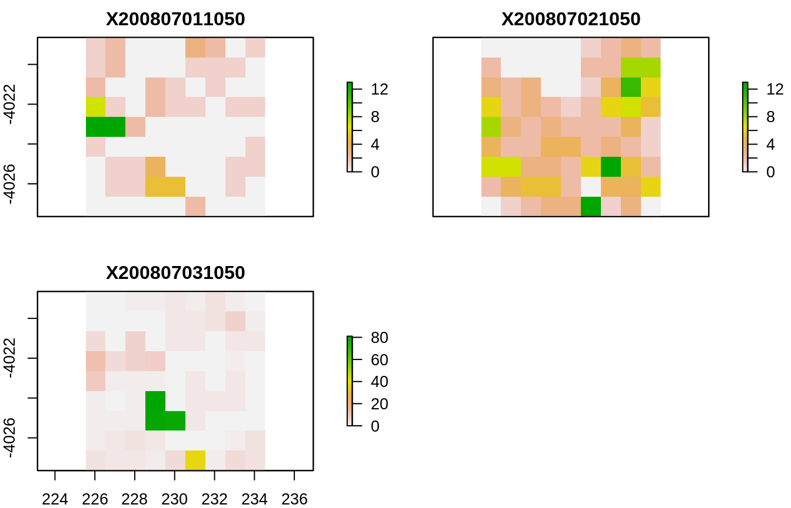

Install the package fhpredict from GitHub, using the package remotes. Install from the “dev” branch to get the latest version:
In the data model of the app everything is assigned to a user identified by a unique identifier, the user id. To get an overview on available users and their associated ids, run:
# Get overview on available users in a data frame
users <- fhpredict::api_get_users()
# Print the data frame
users
#> id firstName lastName role protected
#> 1 3 Flusshygiene creator FALSE
#> 2 4 Karla Kolumna reporter FALSE
#> 3 2 Conan the Barbarian admin TRUE
#> 4 1 Shera the Princess of Power reporter FALSE
#> createdAt version updatedAt
#> 1 2019-08-29T23:13:51.297Z 1 2019-08-29T23:13:51.297Z
#> 2 2019-08-29T23:13:51.297Z 1 2019-08-29T23:13:51.297Z
#> 3 2019-08-29T22:07:37.101Z 1 2019-08-29T22:07:37.101Z
#> 4 2019-08-29T22:07:37.101Z 1 2019-08-29T22:07:37.101Z
#> email
#> 1 flusshygiene@protonmail.com
#> 2 karla@bluemchen.dev
#> 3 moron-zirfas@technologiestiftung-berlin.de
#> 4 moron-zirfas@technologiestiftung-berlin.de
#> auth0Id
#> 1 auth0|5cc86848839956107b7d19e1
#> 2 <NA>
#> 3 <NA>
#> 4 <NA>Use the function api_get_bathingspot() to get an overview on the bathing spots that are stored in the postgres database. You need to specify the user to whom the bathing spots are associated. See above for how to get a list of available user ids.
# Get overview on the first "limit" bathingspots associated to user with id 3
bathing_spots <- fhpredict::api_get_bathingspot(user_id = 3)
# Number of bathing spots returned
nrow(bathing_spots)
#> [1] 50By default, only the first 50 bathing spots are considered in the returned data frame. Set the argument limit to a high number so that you get a list of all available bathing spots:
The variable spot now contains a list of properties of the selected bathing spot. As the list contains a lot of NULL elements, we remove these elements before looking at the overall structure of the list:
# Look at the overall structure of the list omitting any NULL element
str(kwb.utils::excludeNULL(spot), 1)
#> Removing 38 list elements that are NULL ... ok. (0.00s)
#> List of 22
#> $ id : int 1170
#> $ createdAt : chr "2019-08-29T22:27:25.861Z"
#> $ updatedAt : chr "2019-08-29T23:13:51.297Z"
#> $ version : int 59
#> $ bwId : chr "DEMV_PR_1_0724"
#> $ coordinateSystem : chr "ETRS89"
#> $ type : chr "1"
#> $ name : chr "AHLBECK FKK"
#> $ nameLong : chr "OSTSEE, AHLBECK, FKK-STRAND, RICHTUNG GRENZE"
#> $ isPublic : logi TRUE
#> $ influencePurificationPlant : chr "unknown"
#> $ influenceCombinedSewerSystem: chr "unknown"
#> $ influenceRainwater : chr "unknown"
#> $ influenceAgriculture : chr "unknown"
#> $ location :List of 2
#> $ area :List of 2
#> $ latitude : num 53.9
#> $ longitude : num 14.2
#> $ predictions : list()
#> $ models : list()
#> $ measurements :List of 55
#> $ area_coordinates : num [1:33, 1:2] 14.3 14.3 14.3 14.3 14.2 ...
#> ..- attr(*, "type")= chr "Polygon"Use the $ operator to access the different properties of the bathing spot:
We are especially interested in the coordinates of the polygon that defines the area over which to average the rain data that is assumed to influence the water quality of the bathing spot. This information is stored in the list element area. It can be transformed into a GeoJSON string using the function toJSON() from the jsonlite package. There is also a list element area_coordinates that contains the same coordinates in the form of a two column data frame.
# Polygon coordinates as a GeoJSON string
jsonlite::toJSON(spot$area)
#> {"type":["Polygon"],"coordinates":[[[[14.2827],[53.9524]],[[14.2739],[53.9587]],[[14.2631],[53.9639]],[[14.2509],[53.9677]],[[14.2376],[53.9701]],[[14.2237],[53.9709]],[[14.2099],[53.97]],[[14.1966],[53.9677]],[[14.1844],[53.9638]],[[14.1737],[53.9586]],[[14.1649],[53.9523]],[[14.1584],[53.945]],[[14.1545],[53.9372]],[[14.1531],[53.9291]],[[14.1545],[53.921]],[[14.1586],[53.9132]],[[14.1652],[53.906]],[[14.174],[53.8997]],[[14.1847],[53.8945]],[[14.197],[53.8907]],[[14.2102],[53.8883]],[[14.224],[53.8875]],[[14.2378],[53.8884]],[[14.2511],[53.8907]],[[14.2633],[53.8946]],[[14.274],[53.8998]],[[14.2828],[53.9061]],[[14.2893],[53.9133]],[[14.2933],[53.9211]],[[14.2947],[53.9293]],[[14.2933],[53.9374]],[[14.2893],[53.9452]],[[14.2827],[53.9524]]]]}
# Polygon coordinates as a data frame
head(spot$area_coordinates)
#> [,1] [,2]
#> [1,] 14.28270 53.95241
#> [2,] 14.27387 53.95872
#> [3,] 14.26313 53.96389
#> [4,] 14.25087 53.96773
#> [5,] 14.23757 53.97008
#> [6,] 14.22374 53.97087The spot object contains the results of water quality measurements in its list element measurements. Use the (non-exported) function flatten_recursive_list to convert the corresponding recursive list into a data frame.
# Provide the measurements related to the bathing spot
measurements <- fhpredict:::flatten_recursive_list(spot$measurements)
# Have a look at the first measurements (after removing empty columns)
head(kwb.utils::removeEmptyColumns(measurements))
#> measurements: 15 empty columns removed: sicht, conc_ec_txt, oldId, detailId, conc_ie_txt, temp, algen, cb, sichtTxt, tempTxt, algenTxt, bsl, state, wasserqualitaet, wasserqualitaetTxt
#> id createdAt updatedAt
#> 1 77290 2019-08-29T22:27:25.866Z 2019-08-29T22:27:25.879Z
#> 2 77291 2019-08-29T22:27:25.884Z 2019-08-29T22:27:25.897Z
#> 3 77292 2019-08-29T22:27:25.902Z 2019-08-29T22:27:25.916Z
#> 4 77293 2019-08-29T22:27:25.921Z 2019-08-29T22:27:25.938Z
#> 5 77294 2019-08-29T22:27:25.944Z 2019-08-29T22:27:25.957Z
#> 6 77295 2019-08-29T22:27:25.962Z 2019-08-29T22:27:25.975Z
#> date conc_ec conc_ie
#> 1 2009-05-19T00:00:00.000Z 15 15
#> 2 2009-06-16T00:00:00.000Z 77 15
#> 3 2009-08-11T00:00:00.000Z 15 15
#> 4 2008-06-10T00:00:00.000Z 15 15
#> 5 2009-07-14T00:00:00.000Z 15 15
#> 6 2009-09-08T00:00:00.000Z 46 15Use the function api_get_model() to get an overview on the models that are stored in the postgres database. You need to pass the user id (here: 3) and the id of the bathing spot (here: 18) to the function.
# Read all models that are stored for one bathing spot of one user
model_info <- fhpredict::api_get_model(user_id = 3, spot_id = 18)
#> Reading all models from the database ... ok. (0.25s)The function returns a data frame with one row per available model:
# Show meta information on the models
model_info
#> id createdAt version updatedAt
#> 1 1 2019-08-30T09:49:17.482Z 2 2019-08-30T09:49:17.511Z
#> 2 2 2019-08-30T09:50:54.242Z 2 2019-08-30T09:50:54.590Z
#> comment
#> 1 Mein Automodell
#> 2 Modell fuer die Kleine Badewiese, wie es im Paket kwb.flusshygiene.app gespeichert ist.
#> evaluation
#> 1 NA
#> 2 NAUse this overview on available models to lookup the id of the model that you actually want to fetch from the database.
Use the model id to fetch a specific model from the database:
# Load model with id 27 from the database
model <- fhpredict::api_get_model(user_id = 3, spot_id = 18, model_id = 2)
#> Reading model with id = 2 from the database ... ok. (0.96s)
#> Converting text to model object ...
#> Registered S3 method overwritten by 'xts':
#> method from
#> as.zoo.xts zoo
#> ok. (3.39s)# Show the (rstan) model
print(model)
#>
#> family: gaussian [identity]
#> formula: e.coli ~ Qm2mean * (Km3m1sum + Rm3asum)
#> observations: 74
#> ------
#> Median MAD_SD
#> (Intercept) 1.0 0.2
#> Qm2mean 0.0 0.0
#> Km3m1sum 0.0 0.0
#> Rm3asum 0.1 0.1
#> Qm2mean:Km3m1sum 0.0 0.0
#> Qm2mean:Rm3asum 0.0 0.0
#> log-fit_ratio 0.0 0.1
#> R2 0.7 0.1
#>
#> Auxiliary parameter(s):
#> Median MAD_SD
#> sigma 0.5 0.0
#>
#> Sample avg. posterior predictive distribution of y:
#> Median MAD_SD
#> mean_PPD 2.0 0.1
#>
#> ------
#> * For help interpreting the printed output see ?print.stanreg
#> * For info on the priors used see ?prior_summary.stanregFor testing purposes we store a simple, small object instead of a STAN model. We use the cars dataset that is shipped with “base R”. Use the function api_add_model() to add the “model” to the database:
# Look at the head of the cars dataset
head(cars)
#> speed dist
#> 1 4 2
#> 2 4 10
#> 3 7 4
#> 4 7 22
#> 5 8 16
#> 6 9 10
# Add the cars dataset to the database
model_id <- fhpredict:::api_add_model(
user_id = 3, spot_id = 18, model = cars, comment = "Cars in R"
)
#> Converting model object to text ... ok. (0.00s)
#> The model has been stored in the database. It has been given the id 155.The function returns the id of the model that was given by the database. We stored the id in the variable model_id. To check if the model arrived in the database we read it back, again using api_get_model()
# Read the "model" back
my_cars <- fhpredict::api_get_model(3, 18, model_id)
#> Reading model with id = 155 from the database ... ok. (0.25s)
#> Warning: This does not look like a model:
#> >>>RDA3
#> A
#> 3
#> 198145
#> 197888
#> 5<<<
#> Returning the original text.We convince ourselves that what we get is identical to what we stored:
Use the function api_delete_model() to remove a model from the database. Let’s delete the model that we just added. Its id is given in the variable model_id.
Use the following script to check if there are any purification plants defined. As there are many bathing spots, the script takes quite a long time and is not run here so that you do not see any outputs.
# Get meta information on all bathing spots
bathing_spots <- fhpredict::api_get_bathingspot(user_id = 3, limit = 10000)
# Number of bathing spots
nrow(bathing_spots)
# Access the "purificationPlants" endpoint for each bathing spot
purification_plants <- lapply(bathing_spots$id, function(spot_id) {
message("spot id = ", spot_id)
result <- fhpredict::postgres_get(path = sprintf(
"%s/purificationPlants",
fhpredict:::path_bathingspot(user_id = 3, spot_id = spot_id)
))
fhpredict:::stop_on_request_failure(result)
result$data
})
# How many bathing spots have purification plants?
sum(lengths(purification_plants) > 0)This chapter describes how to
Define bathing spot and reference time:
There is a top-level function that can be used to perform all steps at once. For the single steps that are performed within this function, see below.
In the following we reduce the range of days for which to load rain data to three days. Setting date_range to NULL will instead load rain data for the whole range of dates for which measurements are available.
# Function to be triggered by the user: Provide rain data for the bathing spot
system.time(rain_ids <- fhpredict::provide_rain_data_for_bathing_spot(
user_id = 3, spot_id = 1441, sampling_time = "1050",
date_range = as.Date(c("2008-07-01", "2008-07-03")),
comment = "testdata-tutorial"
))
#> Reading https://flusshygiene-radolan-sf-data.s3.eu-central-1.amazonaws.com/08/07/01/raa01-sf_10000-0807011050-dwd---bin
#> Reading https://flusshygiene-radolan-sf-data.s3.eu-central-1.amazonaws.com/08/07/02/raa01-sf_10000-0807021050-dwd---bin
#> Reading https://flusshygiene-radolan-sf-data.s3.eu-central-1.amazonaws.com/08/07/03/raa01-sf_10000-0807031050-dwd---bin
#> A rain data record with id = 1425 has been inserted.
#> A rain data record with id = 1426 has been inserted.
#> A rain data record with id = 1427 has been inserted.
#> user system elapsed
#> 1.520 0.044 9.088Check that the data arrived by reloading them from the database:
# Reload rain data from the database
rain <- fhpredict::api_get_rain(user_id = 3, spot_id = 1441)
#> Reading rain data from database ... ok. (0.44s)
#> Converting time columns from text to POSIXct ... ok. (0.00s)
# Show the first records of the rain data
head(rain)
#> id createdAt updatedAt dateTime value
#> 1 801 2019-09-03 12:07:46 2019-09-03 12:07:46 2008-07-01 10:50:00 0.007
#> 2 802 2019-09-03 12:07:46 2019-09-03 12:07:46 2008-07-02 10:50:00 0.073
#> 3 803 2019-09-03 12:07:46 2019-09-03 12:07:46 2008-07-03 10:50:00 0.137
#> 4 833 2019-09-03 13:01:01 2019-09-03 13:01:01 2008-07-03 10:50:00 0.137
#> 5 909 2019-09-03 13:51:21 2019-09-03 13:51:21 2008-07-01 10:50:00 0.007
#> 6 910 2019-09-03 13:51:22 2019-09-03 13:51:22 2008-07-02 10:50:00 0.073# Read rain data for a certain time period
radolan_stack <- fhpredict:::read_radolan_raster_stack(
date_from = date_from,
date_to = date_to,
bathing_season_only = TRUE,
sampling_time = sampling_time
)
#> Reading https://flusshygiene-radolan-sf-data.s3.eu-central-1.amazonaws.com/08/07/01/raa01-sf_10000-0807011050-dwd---bin
#> Reading https://flusshygiene-radolan-sf-data.s3.eu-central-1.amazonaws.com/08/07/02/raa01-sf_10000-0807021050-dwd---bin
#> Reading https://flusshygiene-radolan-sf-data.s3.eu-central-1.amazonaws.com/08/07/03/raa01-sf_10000-0807031050-dwd---bin
# Show the raster images
raster::plot(radolan_stack)
We want to use only the rain data that lie within a polygon around the bathing spot. This area is a piece of metadata that are stored in the Postgres database for each bathing spot. We first read all metadata about the bathing spot defined above and provide the area information.
# Get metadata about the current bathing spot
spot <- fhpredict::api_get_bathingspot(spot_id = spot_id)
# Check the name of the bathing spot
spot$nameLong
#> [1] "UNTERHAVEL, KLEINE BADEWIESE"
# Provide the polygon in the same structure as returned by
# select_relevant_rain_area(), a function used by Wolfgang to define a polygon
# using an R Shiny app
area <- fhpredict:::convert_area_structure(spot_area = spot$area)
# Show the structure of the area information (a recursive list)
str(area, 2)
#> List of 1
#> $ geometry:List of 2
#> ..$ type : chr "Polygon"
#> ..$ coordinates:List of 1In the next step we use the area information to cut the area regions from the rain data that so far comprises whole Germany:
# Crop the polygons from each raster layer
cropped <- fhpredict:::crop_area_from_radolan_stack(area, radolan_stack)We check the result by plotting the areas. Important note: It seems that not the polygon is cut but the “extent”, i.e. the smallest possible rectangle that contains the polygon!

We now calculate the average rain in each raster layer and provide a simple data frame:
# Get the mean over all layers for each point on the raster
aggregated <- raster::cellStats(cropped, stat = mean)
# The day information can be restored from the names of the layers
dates <- as.Date(substr(names(radolan_stack), 2, 9), format = "%Y%m%d")
rain <- data.frame(
datum = dates,
rain = as.numeric(aggregated) / 10
)Let’s have a look at the created data frame:
# Add rain data frame to the database
rain_ids <- fhpredict::api_add_rain(user_id, spot_id, rain)
#> A rain data record with id = 1431 has been inserted.
#> A rain data record with id = 1432 has been inserted.
#> A rain data record with id = 1433 has been inserted.
# Read rain from database
rain <- fhpredict::api_get_rain(user_id, spot_id)
#> Reading rain data from database ... ok. (0.44s)
#> Converting time columns from text to POSIXct ... ok. (0.00s)
# What should we do with duplicates?
sum(duplicated(kwb.utils::selectColumns(rain, "dateTime")))
#> [1] 320
# Delete rain data with given rain record ids
fhpredict::api_delete_rain(user_id, spot_id, rain_ids)
#> Deleting rain data point with id 1431 ... ok. (0.25s)
#> Deleting rain data point with id 1432 ... ok. (0.25s)
#> Deleting rain data point with id 1433 ... ok. (0.25s)
# For simplicity reasons: delete all rain data before inserting new data
#fhpredict::api_delete_rain(user_id, spot_id)
# TODO: Remove only the duplicates, keeping the most current values